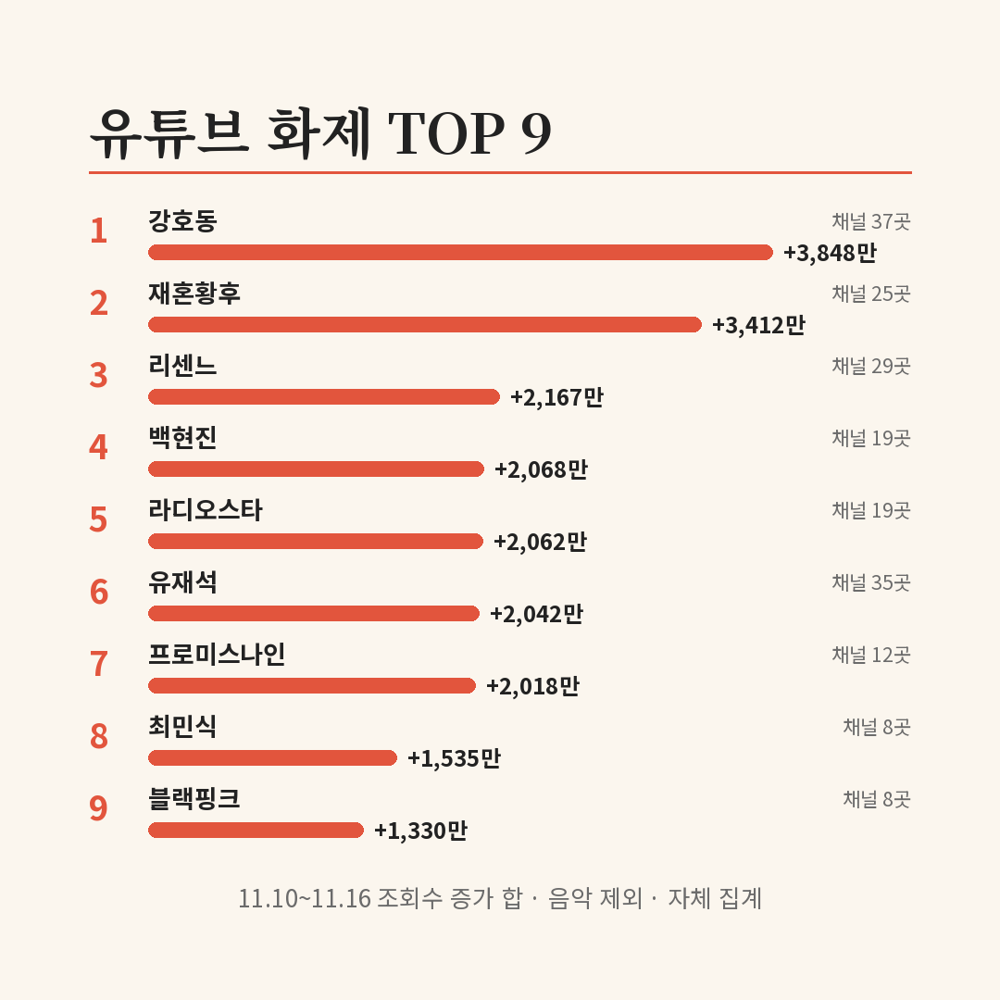

지난주 유튜브 화제 상위권을 만든 대표 영상 46편 가운데 45편이 3분 이하 짧은 영상이었어요. 11월 10일부터 16일까지 가장 크게 퍼진 화제를 순위로 묶고 원본을 볼 수 있는 공식 영상을 함께 붙였어요. 숫자는 11월 16일 오전 8시 기준이에요.
순위는 같은 이름(인물·프로그램)이 제목·해시태그에 들어간 영상들의 일주일 조회수 증가를 더한 값이에요(자체 집계). 연예인이 아닌 해외 크리에이터 영상 하나는 순위에서 뺐어요.
📷 사진 1 자리
1위 강호동, 37개 채널에서 3,848만
강호동 이름이 붙은 영상 53편이 일주일 동안 3,848만 회 늘었어요. 채널은 37곳이고 영상은 모두 짧은 영상이었어요. 같이 묶인 이름은 아는형님, 서장훈, 한끼줍쇼, 이경규예요.
퍼진 영상은 씨름부 시절 이야기, 실제 스케줄 이야기처럼 강호동 일화를 담은 짧은 클립이 많았어요. 원본 쪽에서는 아는형님 공식 채널 쇼츠가 일주일 사이 29만 회 늘었어요.
▶ 영상 1 자리
2·3위는 재혼황후와 리센느
디즈니플러스 드라마 '재혼황후'는 25개 채널, 49편으로 3,412만 회 늘었어요. 신민아, 주지훈, 이세영, 이종석 이름이 같이 묶였어요. 링크할 수 있는 공식 영상은 이번 집계에 없었어요.
3위 걸그룹 리센느는 29개 채널에서 2,167만 회예요. 7일 내내 인기 동영상 차트에 영상이 있었어요. tvN 예능 '놀라운 토요일'의 '서울 목욕탕 갔다가 짤 당한 원이' 클립이 공식 채널에서 53만 회 늘었고 '리센느입니다' 채널의 멤버 쇼츠도 함께 퍼졌어요.
▶ 영상 2 자리
4~9위, 예능 토크와 드라마 클립
4위 백현진(2,068만, 채널 19곳)은 쿠팡플레이, 이수지, 김원훈, 지예은과 함께 묶였어요. 5위 라디오스타(2,062만)는 원조 채널 '라디오스타'에 올라온 박명수 쇼츠가 116만 회 늘었어요.
▶ 영상 3 자리
6위 유재석(2,042만)은 긴 영상 하나가 컸어요. 뜬뜬 채널의 '핑계고' EP.124(공유·송혜교·양세찬 출연)는 이틀 만에 542만 회로, 구독자 339만의 1.6배예요. 이번 순위의 3분 넘는 공식 영상 가운데 구독자 대비 조회수가 가장 높았어요.
▶ 영상 4 자리
7위 프로미스나인(2,018만)은 박지원, 워크맨과 함께 묶였어요. 8위 최민식(1,535만)은 '차무식', '카지노'가 제목에 들어간 드라마 장면 클립으로 8개 채널에 퍼졌지만 공식 영상은 없었어요. 9위는 블랙핑크(1,330만)예요.
음악은 에이티즈 'UP'
음악 영상 1위는 에이티즈 'UP' 공식 MV예요. 11월 13일 올라와 기준 시각까지 3,008만 회로, 구독자의 8.6배예요. 2위 NCT DREAM 'Boogie Woogie' MV(2,185만), 3위 엔하이픈 'I Want You' MV(2,008만)가 뒤를 이었어요.
▶ 영상 5 자리
9개 화제 중 8개가 7일 내내 차트에 영상을 올려 두었을 만큼 한 주 내내 같은 얼굴이 돌았어요. 짧은 클립으로 먼저 봤다면 원본인 '핑계고'나 '놀라운 토요일' 회차를 찾아보는 편이 맥락을 알기 쉬워요.
다음 유튜브 화제 리포트는 11월 23일 월요일에 올라와요.
